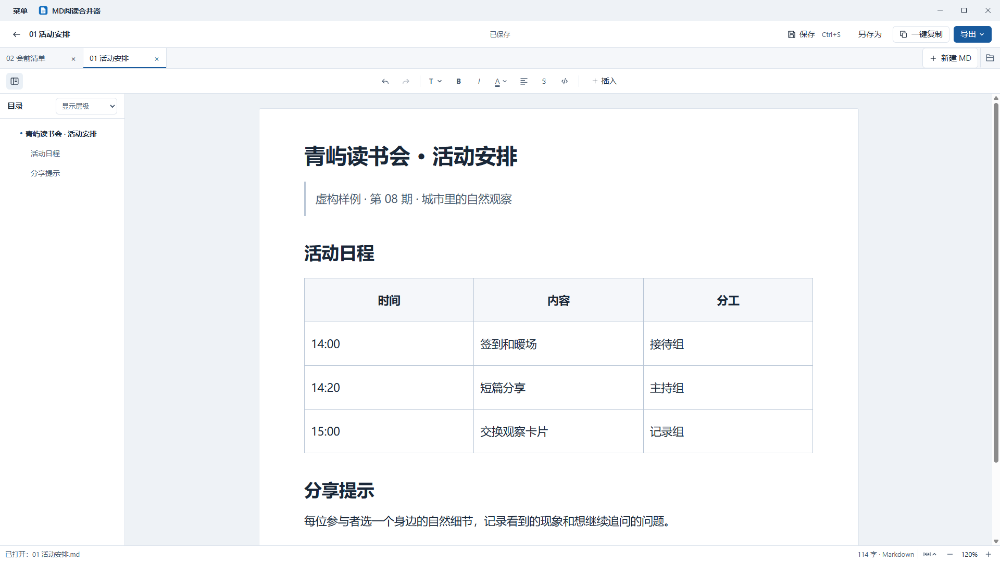
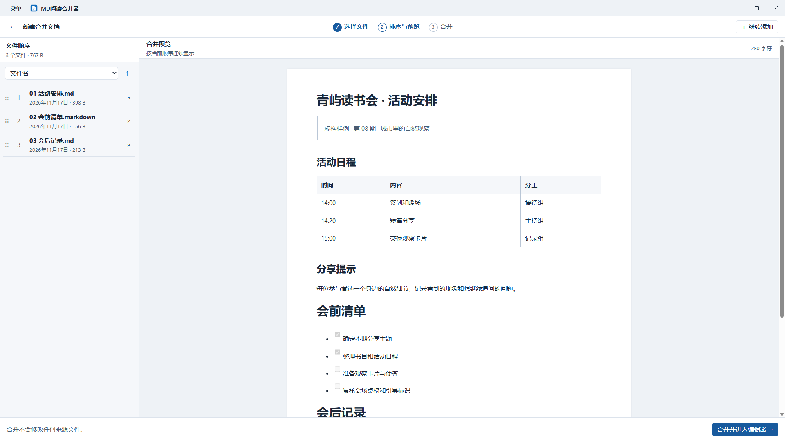

MD阅读合并器
在 Windows 上打开、编辑和阅读 Markdown，也能把多份 .md 文档拖动排序后合成一份。
下载与安装
暂未开放下载，Microsoft Store 版正在准备上架。
支持 Windows 10 / 11 64 位（x64）。上架后，打开商店产品页并点击「获取」或「安装」。如果商店显示「找不到产品」，请稍后回到本页查看。
查看 Microsoft Store 上架状态
怎么用
- 阅读与编辑。在首页点「打开文件」，选择一个或多个 Markdown 文件，再用标签、目录或查找定位内容。
- 合并。在首页进入合并流程，加入文件，拖动调整顺序并预览，再点「合并并进入编辑器」。
- 保存与导出。按 Ctrl+Shift+S 另存为新文件，也可以导出 Markdown、HTML、TXT、PDF 或 Word（DOCX）。
界面预览

在同一窗口阅读多份文档

确认顺序和内容后再合并
更新与反馈
文档在本机处理。公开版联网检查更新，出现更新提示时，请先处理未保存的文档再升级。
反馈时可附上软件版本、Windows 版本和问题截图。请使用可公开的样例。